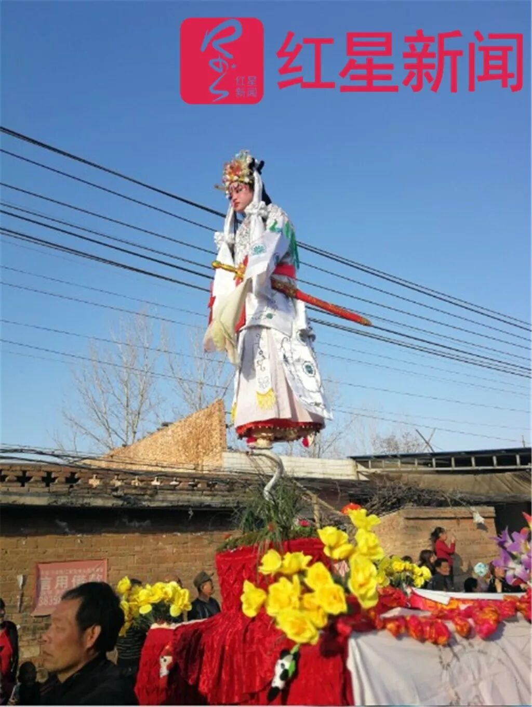
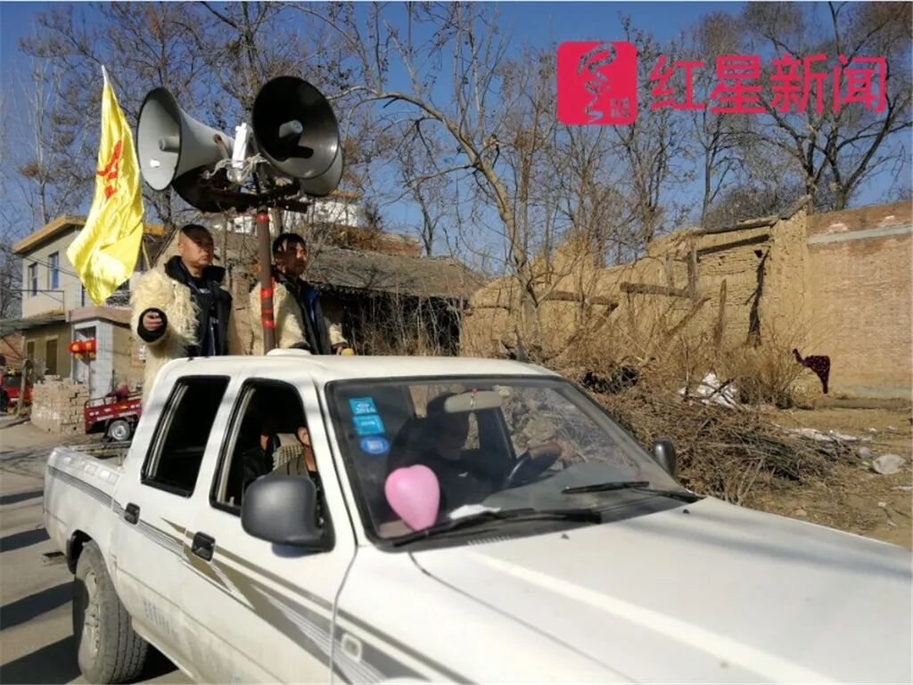
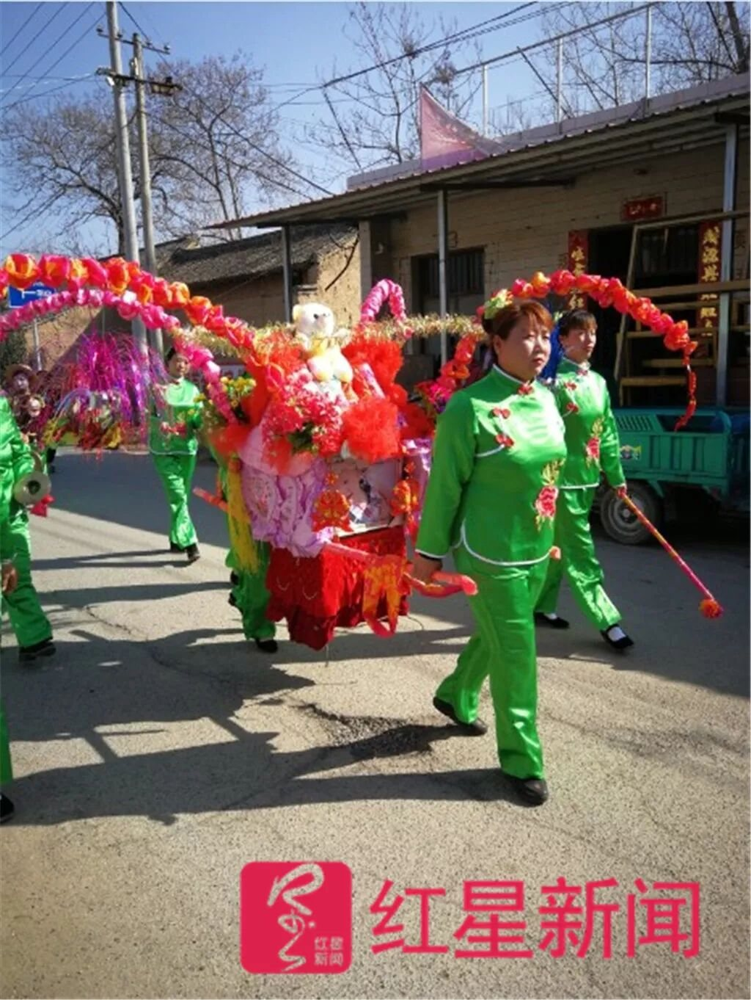
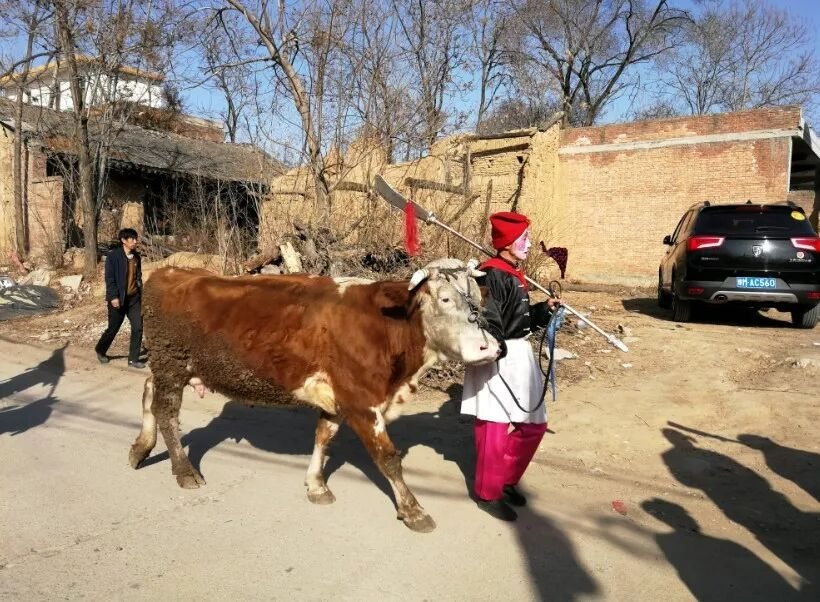

共十二帧，按流程排列。点击任意一帧可放大查看；按 展陈模式 可进入全屏轮播，适合展览、路演与答辩现场投屏循环播放。




Notes
本站影像目前为公开报道所用图片，仅作学术展示，版权归原作者所有。正式发布时，将替换为田野调查期间拍摄的原始照片。
拍摄这类民俗有两条底线：不打断仪式，不消费个人。夜骂针对的是具体的人与事，镜头怼到脸上、把骂词单独截出来传播，都会把公共批评变成人身攻击。
建议
若用于展览或答辩，建议使用“展陈模式”：全屏、无导航、自动轮播，每帧配一句说明。按 ESC 退出，按空格暂停，按 ← → 手动切换。
替换
图片放在 assets/img/ 目录，保持同名覆盖即可；说明文字在同目录的 assets/js/exhibit-data.js 中修改。
影像档案